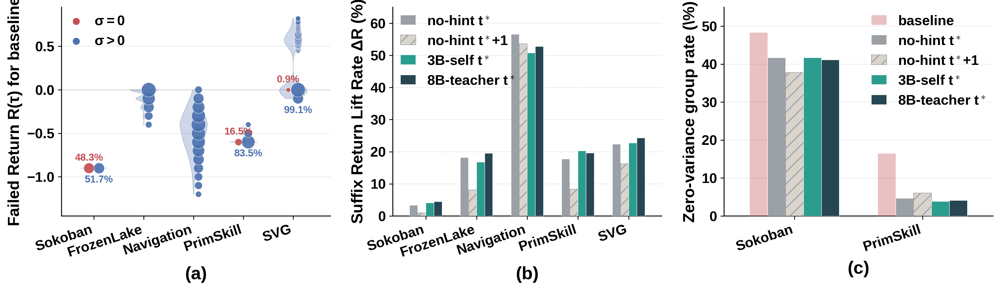

01 — The puzzle
An episode score cannot see the fatal step
Group-Relative Policy Optimization ranks whole trajectories. Multi-turn agents fail at a single turn.
A vision-language agent acts in a loop: observation, action, next observation. GRPO samples eight rollouts for the same prompt and converts their returns into one advantage per trajectory. Every action token in that trajectory inherits the same number.
When the eight returns match, the advantage is zero. On an untrained Qwen2.5-VL-3B this zero-gradient silence covers 48.3% of Sokoban groups and 16.5% of PrimitiveSkill groups, even though the failures inside a group are not the same mistake. Where a per-step penalty makes the returns differ, the advantage still only punishes length. It does not isolate the turn after which the goal is gone.

Takeaway Failed GRPO trajectories are either silent or coarsely credited. Neither case tells the policy which action first made the task unrecoverable.
02 — The probe
Follow the state, not the prompt
On-policy distillation looks like a teacher, or the model itself, writing a better hint after failure. A rollback probe separates that story from the state.
Call a state feasible when some plan still reaches the goal inside the remaining budget. The pivot step t* is the first action that leaves a state for which no such plan exists. If the trajectory never becomes infeasible, t* is the last step.
Pivot step
t* = min { t : Feas(st+1, T − t − 1) = 0 }
On the same failed rollouts we restore the simulator and resample one suffix from the base policy. Four arms differ only in where we restore, and in whether a hint is pasted into the prompt.
Suffix-return lift ΔR (%), one resampled suffix. Exact values: Sokoban 3.3 / 0.9 / 4.1 / 4.4; FrozenLake 18.2 / 8.1 / 16.8 / 19.5; Navigation 56.6 / 53.6 / 50.8 / 52.7; PrimitiveSkill 17.7 / 8.3 / 20.3 / 19.6; SVG 22.4 / 16.2 / 22.8 / 24.3.
Three readings
Restoring at t* with no hint lifts the suffix on every task, from 3.3% of Sokoban failures to 56.6% of Navigation failures. The same restore also cuts zero-variance groups: Sokoban 48.3% to 41.7%, PrimitiveSkill 16.5% to 3.8%.
Moving the restore one step later removes most of that lift on four tasks. Sokoban falls from 3.3% to 0.9%. PrimitiveSkill falls from 17.7% to 8.3%. FrozenLake falls from 18.2% to 8.1%. Navigation barely moves, 56.6% to 53.6%, which is why timing still has to be checked per environment rather than assumed.
A failure-mode label plus a skill string — written by the 3B itself, or by Qwen3-VL-8B — changes the lift by only a few points. On Navigation the no-hint restore is the best of the four arms.
Working hypothesis On these agents, OPD and OPSD mostly work by putting the world back at the pivot step. The hint is a small residual.
That is the rollback paradox. The intervention that works is a simulator rewind. Online RL cannot afford it, and a real environment often cannot rewind at all. Inference also should not carry an extra skill prompt. The rest of the paper is how to keep the rollback and drop the simulator.
What each probe arm is allowed to see
Every arm starts from the same failed untrained Qwen2.5-VL-3B rollouts and resamples the suffix with that base policy. The no-hint arm restores the state and adds nothing to the prompt. The hinted arms pin the failure mode and append a guidance string from either the untrained 3B or Qwen3-VL-8B. The late arm restores at t*+1 and uses no hint.
03 — The recipe
Three roles, one set of weights
PIVOT turns the rewind into a token update. Student, Analyzer, and Teacher share πθ. Only the student ships.

Cold-start the diagnosis
Failed on-policy rollouts become a collage of every frame plus a compact action log. Supervised fine-tuning teaches the model to emit a triplet: pivot step, failure mode, and an optional guidance skill. No latent state is shown. About 960 to 1.7k accepted trajectories per environment, three epochs.
Score the original failure in place
Each RL iteration samples a group of eight. On a failed rollout the Analyzer names a pivot and crops the three frames around it. A detached Teacher rereads the original action tokens with that context prepended. Gradients through the Teacher are stopped.
Deploy the student alone
At test time the Analyzer and the Teacher are gone. The agent conditions only on the ordinary history. There is no skill prompt and no second model.
Reads the collage and the action log. Predicts the pivot, the failure mode, and an optional skill, then builds the privileged context p = (panel, mode, step, skill).
Log-probability of the student’s own action under the privileged history. Stop-gradient. This is the internalized rewind: the same tokens, rescored as if the pivot were visible.
Log-probability under the ordinary history. Optimized by GRPO on the group advantage, plus a confidence-gated pull toward the Teacher on failed trajectories only.
Joint objective
ℒ = ℒGRPO + λ ℒOPD
Failure modes the Analyzer is asked to name
- Sokoban and FrozenLake: timeout if the goal is still reachable with unlimited steps, deadlock if it is not.
- Navigation: format, blocked, stagnation, or budget.
- PrimitiveSkill: timeout, format, wrong target, or order error.
- SVG: format, regression, stagnation, or mismatch on the last scored canvas.
04 — How credit moves
The panel is the rollback
The Teacher never resets the environment. It sees three frames centered on the predicted pivot, and that is enough to reweight the original actions.


The gate keeps the update local
The Teacher does not replace the student token by token. The gate opens when the privileged context raises the log-probability of the action that was actually taken, and closes when hindsight makes that action look worse. Mass therefore moves where seeing the pivot changes the model’s mind, which is the token-level version of restoring the state.
A random frame is harmful
On Qwen2.5-VL-3B, a visual panel alone or a failure mode alone each reaches about 0.86 on Sokoban. The panel plus the mode reaches 0.90, and the full stack reaches 0.95. Replacing the predicted pivot with a uniform random step, while keeping the mode and the skill text, falls to 0.75 on Sokoban and 0.80 on Navigation — below vanilla GRPO. An arbitrary frame is noise. The timing is the method.
05 — Evidence
The same model, without the machinery
Five VAGEN tasks: Sokoban and FrozenLake, navigation and primitive manipulation, and SVG reconstruction. Success rate everywhere except SVG, which uses a DINO and DreamSim composite.
| Method | Sokoban | FrozenLake | Nav | PrimSkill | SVG | All |
|---|---|---|---|---|---|---|
| Vanilla GRPO | 0.78 | 0.71 | 0.81 | 0.90 | 0.78 | 0.80 |
| SFT + GRPO | 0.82 | 0.75 | 0.85 | 0.94 | 0.80 | 0.83 |
| SDAR (7B teacher) | 0.52 | 0.77 | 0.86 | 1.00 | 0.80 | 0.79 |
| GLANCE-Full | 0.85 | 0.78 | 0.87 | 0.97 | 0.81 | 0.86 |
| PIVOT, mode only | 0.86 | 0.83 | 0.86 | 1.00 | 0.83 | 0.88 |
| PIVOT, mode + panel | 0.90 | 0.77 | 0.89 | 1.00 | 0.84 | 0.88 |
| PIVOT, full | 0.95 | 0.84 | 0.90 | 1.00 | 0.82 | 0.90 |
Navigation and PrimitiveSkill are averages of their sub-tasks. SVG is the mean of DINO and DreamSim. Full PIVOT is the M+P+R context: panel, failure mode, predicted step, and guidance skill. On this backbone the skill text slightly lowers the SVG composite, 0.84 to 0.82; DINO stays at 0.93.
| Method | Sokoban | FrozenLake | Nav | PrimSkill | SVG | All |
|---|---|---|---|---|---|---|
| Vanilla GRPO | 0.77 | 0.89 | 0.85 | 0.77 | 0.79 | 0.81 |
| SFT + GRPO | 0.80 | 0.87 | 0.83 | 0.82 | 0.79 | 0.82 |
| PIVOT, mode only | 0.82 | 0.81 | 0.84 | 1.00 | 0.81 | 0.86 |
| PIVOT, mode + panel | 0.97 | 0.89 | 0.89 | 1.00 | 0.82 | 0.91 |
| PIVOT, full | 0.92 | 0.90 | 0.95 | 1.00 | 0.85 | 0.92 |
On the 2B backbone the Sokoban peak is the mode-plus-panel arm at 0.97, not the full stack at 0.92. Everywhere else the full context is the best of the PIVOT arms.
The Analyzer gets sharper while the policy trains
FrozenLake has a shortest-path certificate, so predicted pivots can be checked against the ground truth on failed rollouts. Under the full method the 15-step moving accuracy starts near 0.56, reaches 0.90 by step 100, and later holds near 0.95. Better localization and better actions improve together. There is no separate diagnostic model to maintain.


PIVOT’s per-step time, 95 seconds, is slightly under vanilla GRPO at 102 seconds. The diagnostic pass is real work, but the policy stops sampling long doomed trajectories, and rollout time dominates. Stripping the branches at test time leaves an ordinary student forward pass.